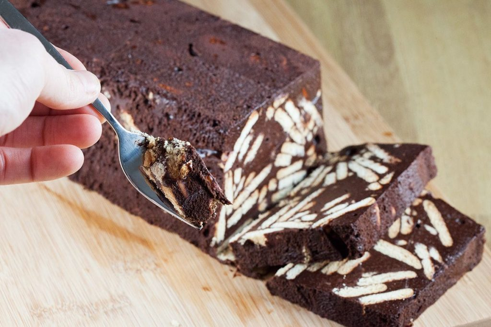

Arretjescake
door Ingrid Bakker Als je van chocolade houdt, dan vind je deze cake gegarandeerd lekker!
Ingrediënten
- 100 gram margarine
- 25 gram cacao
- 1/2 pak biscuitjes
Bereidingstijd
- Voorbereidingstijd
- 15 minuten
- Baktijd
- 1 uur
Voedingswaarde
240 calorieën,
9 gram vet
Instructies
- Hak 125 g chocolade in kleine stukjes en doe deze in een steelpan. Hang de steelpan in een iets grotere pan met bijna kokend water en laat de chocolade smelten (au bain marie)
- Haal het steelpannetje met chocolade uit het water en voeg de boter en basterdsuiker toe.
- Roer totdat de boter is zacht is.
- Verkruimel de biscuitjes grof en voeg toe.
- Meng alles goed en zet 4 uur in de koelkast.